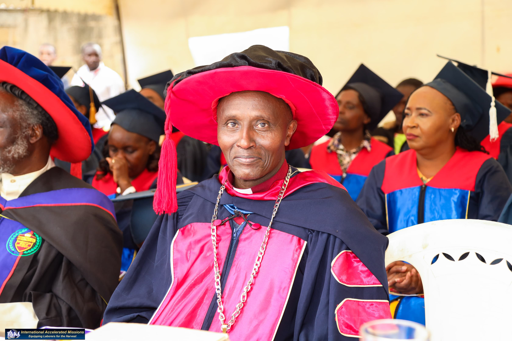

International Accelerated Missions (I.A.M) is an interdenominational discipleship training institution dedicated to training men and women in the Word of God.
International because it ministers throughout the world with Bible schools operating in different nations and languages.
Accelerated because the time is short before our Lord returns and there is an urgent need to prepare labourers for the harvest.
Missions because Christ commanded us to go and make disciples of all nations through evangelism, discipleship and practical ministry.
I.A.M provides affordable and accessible Bible training for believers who may not be able to attend traditional Bible schools.
Ministering throughout the world.
Preparing labourers before Christ returns.
Making disciples of all nations.

I.A.M Mt. Kenya Region Coordinator
I.A.M National Director
Our experienced and dedicated lecturers are committed to equipping labourers for the harvest through sound biblical teaching, mentorship, and practical ministry training.
Lecturer
Lecturer
Lecturer
Lecturer
Lecturer
To equip men and women with sound biblical knowledge, godly character, prayer, worship and practical ministry skills for effective discipleship and world evangelism.
To see every nation equipped with trained disciples who will multiply biblical training, establish ministries and reach their communities and nations for Christ.
Receive sound biblical teaching based on God's Word and practical Christian living.
I.A.M operates internationally, equipping believers to impact nations for Christ.
Our programs are designed to be accessible and affordable for everyone.
Develop intimacy with God through prayer, worship and spiritual growth.
Structured training programs that equip students for ministry and leadership.
Participate in practical mission trips and outreach ministry as part of your training.
I.A.M Bible School offers Diploma programs designed to equip believers with biblical knowledge, ministry skills, discipleship training and leadership development.
Our Diploma Programme consists of 58 units designed to equip labourers for ministry, discipleship, evangelism and leadership.
"The harvest truly is plentiful, but the labourers are few."
Matthew 9:37
+254 727 022931
International Accelerated Missions (I.A.M) Bible School
Mt. Kenya Region
Equipping Labourers For The Harvest